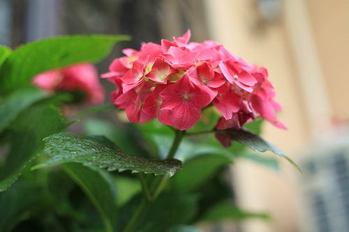

初夏de花 @ Jun 04, 2010
三周前？捧它回家，与我们做伴，引发我们的求知欲，了解许多它的故事。为这丛初夏盛开的绣球花换了新盆与土壤，高温会使花朵褪色快，于是被安置在阴凉通风处，每日瞅它数眼，为枯叶焦虑，因观花喜悦。
这丛绣球花可绽放三种花色，红色、粉色和蓝色。因不同土质展现不同色彩。一早围脖上写反了土质与花色，且被数人转载，羞愧之余，反省“不人云亦云”是必定遵守之道。
为不误导，仍然需要重声：
红色：碱性土
粉色：施用石灰
蓝色：酸性土




15 Responses to “初夏de花”
2010-06-04
绣球是不是紫阳花？
2010-06-04
对.
2010-06-04
哈，紫陽花あじさい, 渡边有本《紫阳花日记》，花语可是变异的心呢～
2010-06-05
很快就会发的很大。记得冬天换盆，然后把头剪秃。去年是一丛，今年我家发成两大丛。如果多的话，很适合剪下来养在花瓶里。一直想，若在瓶子里，会不会在水里滴点醋，花就变蓝。。。
2010-06-05
千万不能暴晒，我买的时候人家告诉我一星期浇一次水好了，很耐旱的，结果我就很大意的两天没浇水，且放于室外，叶子全蔫了，花也枯了。幸而浇透了水，活过来了，就是花没了。
2010-06-05
箱子，是不是直接剪枝王土壤里栽，它就能活？现在已经很大一丛了，周围的枝往外倒。。。是不是可以分成两盆？
绣球花不能缺水，但又不能太涝，短日照植物，每天10小时黑暗处理。这些我是了解了一些，平时照着这些常识去照顾它，虽不是什么珍贵的植物，只要它能好好活下去，我就满足了。
2010-06-05
我也有这种花,可惜我的开得很晚,可能得等到八月份..
2010-06-06
英国比中国的夏天到来的晚吗？
2010-06-06
我家因为是种在室外的，所以没有管什么阳光不阳光，冬天就照样的冻着，也能活。不过我是背阴面种的，所以虽然有阳光，也不至于是每天日照特别强烈的。不过不能缺水是真话。但是所谓不能太涝，这个对每个植物都差不多，浇水的时候一次浇透，等干了再浇，不要每次只浇一点。
2010-06-06
比较方便的方法是，在家搞一个水桶，里面放半桶水，每次花90%干的时候，把花盆直接放桶里浸泡5分钟取出，绝对吸满水了。花基本都是只会淹死不太会干死。偶尔干，比涝要好。我家是直接剪下，就能扦插活。但是这个季节比较悬了，最好是春天不太热的时候，不过你在室内，可以试试，从根部剪多一点，多插几只，成活率不是太高。
2010-06-06
忘记说了，插的时候一根上只留一两片叶子即可，多余的都剪掉，留足养分给主干。我给你插的花叶常青藤，到现在还看不出活没活，郁闷啊。新芽发的好慢，分辨不出。急死我了。
2010-06-07
在家搞一个水桶挺麻烦的吧？整个花盆放进去，里面的突然会不会散漫出来？不要为“常青藤”发芽的事情着急，等养的壮实了再给我，更安全，嘿嘿~谢谢箱子MM啦~
2010-06-07
要不你试试。就用家里普通的塑料桶就好了。快干的时候接半桶水，所谓半桶是根据你花盆的高度来定。基本我家花盆都有半个桶那么高，所以接上半桶水（高度不要高过花盆），把花盆放进桶里，这样，水和盆子的高度刚刚好，土就不会出来啦。。。。这种方法特适合常常水浇不透的姑娘。泡一会，沥沥拿出来即可。茶，你若是已经掌握到浇水的真谛，就依照自己的方法浇吧。嘿嘿，你要是花盆小，不用桶，用小水盆就可以啦。
2010-06-07
这个方法第一次听说，改天我去买个塑料桶回来专门泡花用。你养植物的经验很丰富，得益于你母亲珍传吧？我父亲养花草，常常弄的家里气味难闻，他有时会把死耗子埋进他的小花园里，还砌了水池养乌龟。。。我想先积累经验，以后有了象样的院子，放开来种一圈植物，想到这个就很开心啊！
2010-06-09
这花真好看。
Leave A Reply
存档只读，评论已关闭。